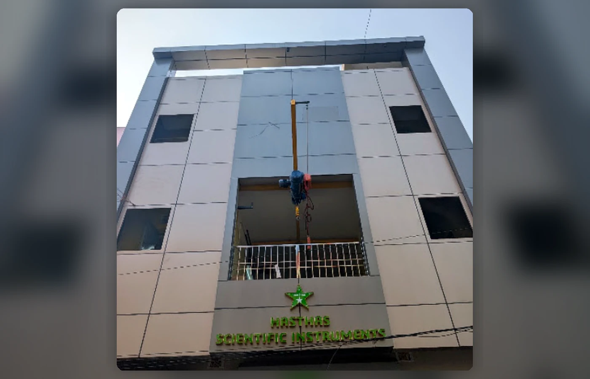
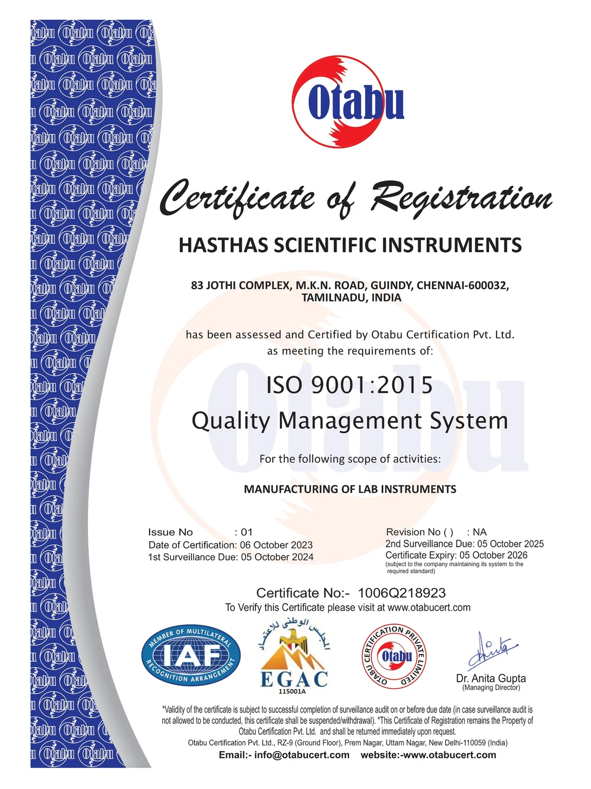
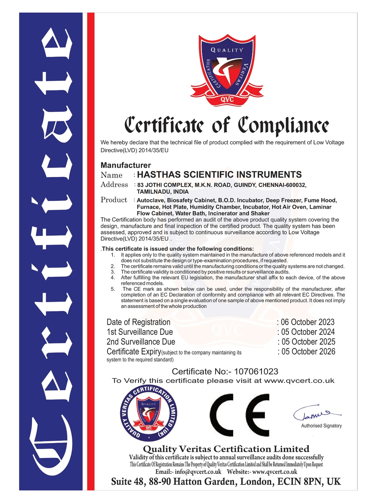
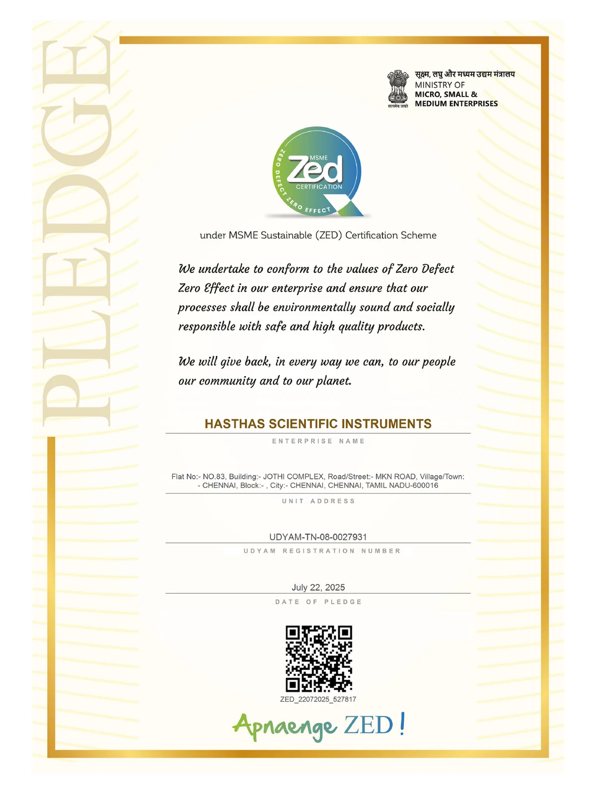
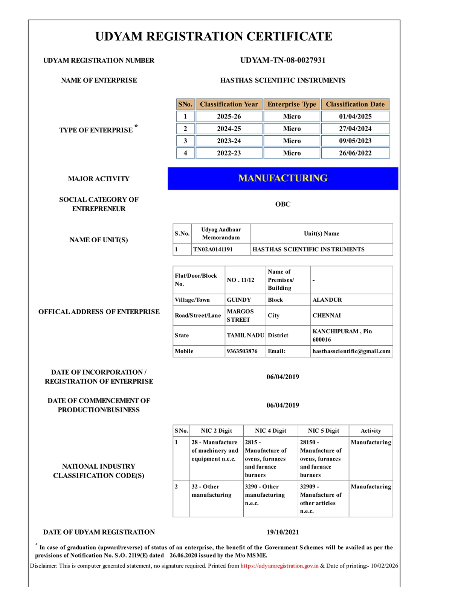
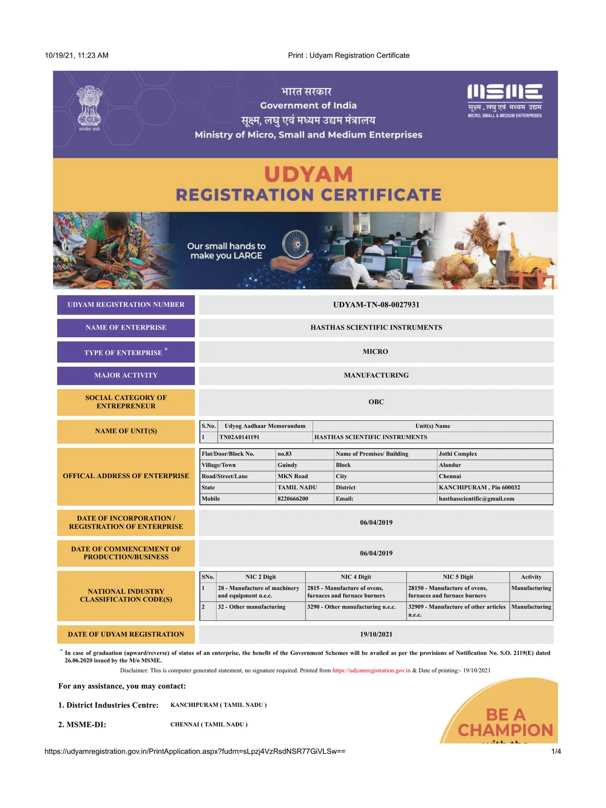
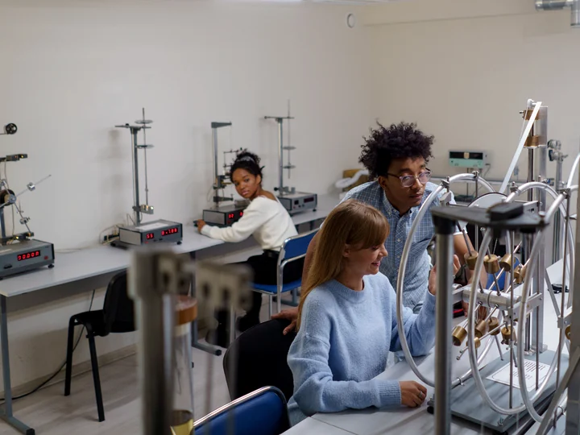
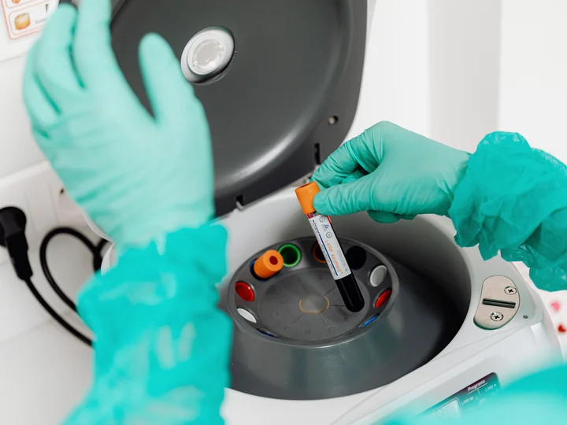
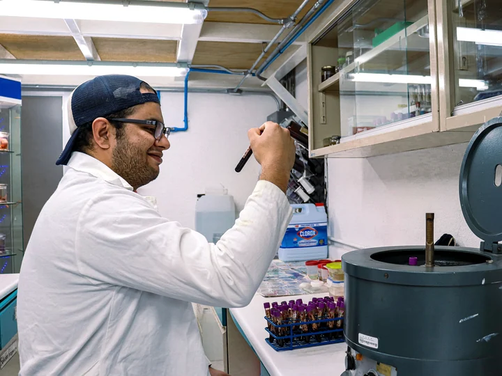
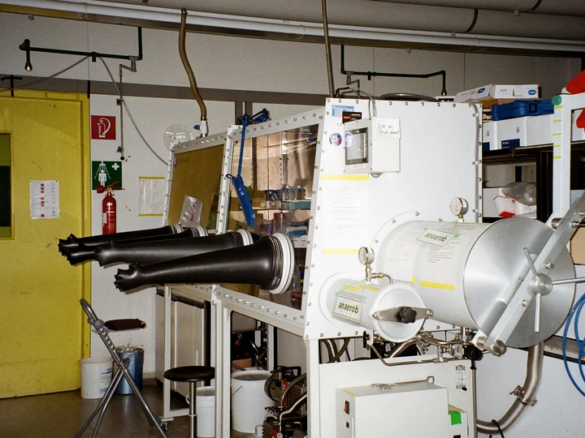

Clear product selectionEquipment is organised by application and category.
About Hasthas
Scientific equipment shaped around real laboratory work.
Hasthas Scientific Instruments is a Chennai-based laboratory equipment manufacturer and supplier supporting education, healthcare, research and industrial applications.
Our role is straightforward: understand the equipment, capacity and operating requirement, then help customers identify a suitable model from a practical laboratory range.
40+equipment models
6product categories
Directmanufacturer support

Hasthas Scientific InstrumentsRamapuram, Chennai
ManufacturerSupplierLaboratory Equipment
Who we are
A product-focused company with a direct approach.
Hasthas works across sterilization, incubation, controlled heating, clean-air systems, temperature baths and essential laboratory processes. The catalogue is designed to help buyers review equipment visually and move quickly towards the right technical discussion.
Instead of presenting one standard solution for every laboratory, the team asks about the application, chamber size or capacity, temperature range, quantity and installation needs before guiding an enquiry.
Practical configurationsSelected models are available in multiple sizes and controls.
Direct communicationCustomers can enquire by call, email or WhatsApp.
How we work
From requirement to a more useful equipment enquiry.
A clear enquiry helps the team respond with relevant options instead of generic information.
Start an Enquiry01
Share the application
Tell us what the equipment will be used for and the laboratory process it needs to support.
02
Define the requirement
Add capacity, temperature, size, quantity and control preferences for the intended use.
 03
03Review suitable models
Compare available configurations, operating features and specifications before selecting a model.
04
Request commercial details
Receive quotation, availability and next-step information directly from the Hasthas team.
Registrations & Certifications
Company credentials and quality certifications
View Hasthas Scientific Instruments' quality, compliance and enterprise registration documents.

Quality Management
ISO 9001:2015 Certificate
Certification covering the manufacturing of laboratory instruments.
View certificate
Product Compliance
CE Certificate of Compliance
Compliance certificate covering listed laboratory equipment categories.
View certificate
MSME ZED
Zero Defect Zero Effect Pledge
Commitment to quality, environmental responsibility and safe products.
View certificate
Enterprise Registration
Udyam Registration 2025-26
Government registration identifying Hasthas as a micro manufacturing enterprise.
View certificate
MSME Registration
Udyam Registration Record
Earlier registration record for the company's manufacturing activity.
View certificateWho we support
Scientific environments with different operating needs.
Equipment options for teaching, testing, sterilization, research and controlled laboratory processes.

Education
Colleges & Universities
Teaching laboratories and departmental facilities.

Healthcare
Hospitals & Medical Labs
Sterilization and controlled laboratory applications.

Research
Research Institutions
Incubation, sample preparation and testing workflows.

Industry
Industrial Laboratories
Process, quality and material-testing environments.